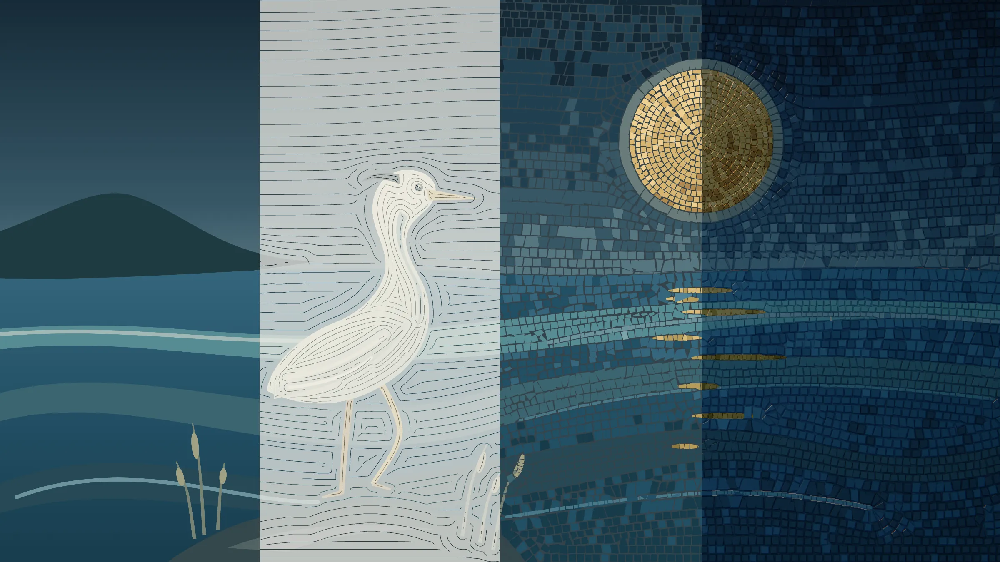
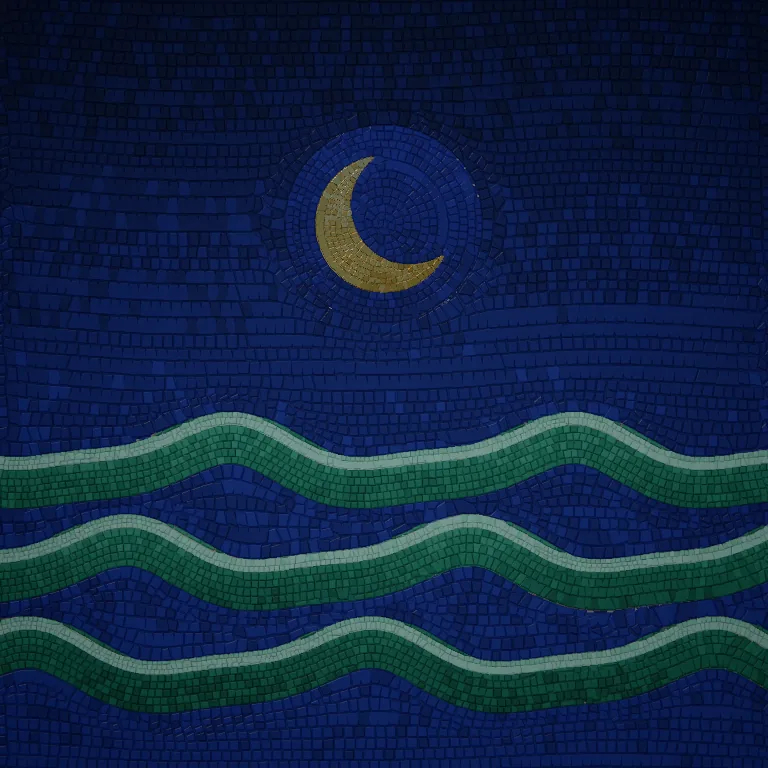

In the browser
Move over the stones, change the light, or bring an image of your own and choose glass, stone, or gold. Your images stay in your browser.
mosAIc is an open mosaic engine and the agent skill that lays it. Your coding agent draws a picture, a film, or a whole page, and the engine cuts it into thousands of stones of glass, marble, and gold, sets them in mortar, and lights each one. This page is one of its walls, cut in your browser around the words you are reading.
Give your agent the skill Try the studio
The source is on GitHub, under the MIT License.
The name in stone. Cutting the stones in your browser.
There is no grid underneath. The courses come from the drawing's own edges, the way a mosaicist sets them by hand.

A scene is a few flat regions in code. Each region names its material, its stone size, and how its courses run.
A field follows every edge, and courses are laid through it at an even spacing. Mosaicists call this flow andamento.
Each course is cut into stones a little smaller than their cells, so mortar shows between them.
Each stone gets thickness, a bevel, and a slight tilt of its own, so one light catches them one at a time.
These medallions are set in the wall itself. Move across them to tilt their stones toward the light, and turn the sound on to hear them under your hand: stone knocks softly, glass rings for a moment, and gold and silver ring on.
Smalti with a broken face, rippled, with the odd bubble.
Leaf under a thin glass skin, softly hammered.
The same leaf, cooler.
A fine grain and a soft sheen.
Dark and dense, with a rare glint.
Matte, pitted, and quiet.
Fired clay, warmer in its hollows.
Glass that glows from inside, for lamps and windows.
A short film from the examples, and two pieces made by agents with the skill.
A ten-second film in two scenes. The night's stones lift off the wall and resettle as a coastal dawn. Scrub it in the studio.
Two pieces from the first skill trials. Each agent got a copy of the skill, wrote its scene as code, rendered it from the command line, and inspected the result.


The browser, the command line, and the agent skill share one renderer, so a picture looks the same wherever it is made.
Move over the stones, change the light, or bring an image of your own and choose glass, stone, or gold. Your images stay in your browser.
Build the skill and copy it into Claude Code, then install the capture browser once. Ask for a mosaic, and the agent writes the scene as code, renders it, and checks the picture before showing you.
git clone https://github.com/Audiofool934/mosaic
cd mosaic && npm run build
mkdir -p ~/.claude/skills
cp -R dist/mosaic ~/.claude/skills/
cd ~/.claude/skills/mosaic/assets/runtime
npm ci && npx playwright-core install chromiumFor Codex, copy it into ~/.codex/skills/ instead.
Start a scene, preview it, and export a still or a silent H.264 film. Every export is a fresh render with a receipt of its inputs.
git clone https://github.com/Audiofool934/mosaic
cd mosaic && npm ci
npx playwright-core install chromium
node tools/cli.mjs init art
node tools/cli.mjs preview art/project.json
node tools/cli.mjs still art/project.json
node tools/cli.mjs render art/project.jsonExports land in output/. Films also need FFmpeg on your PATH.